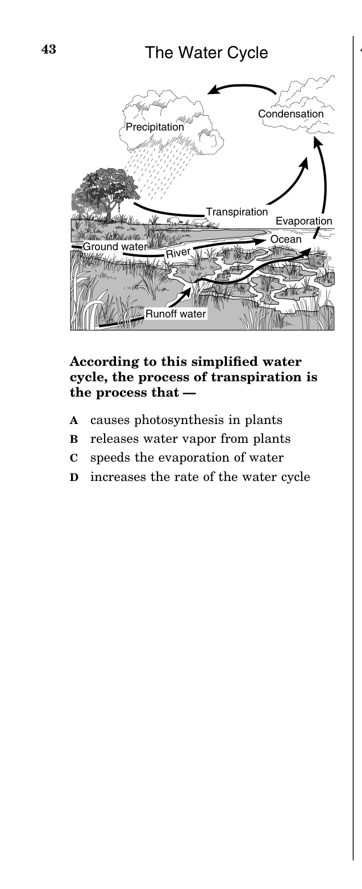
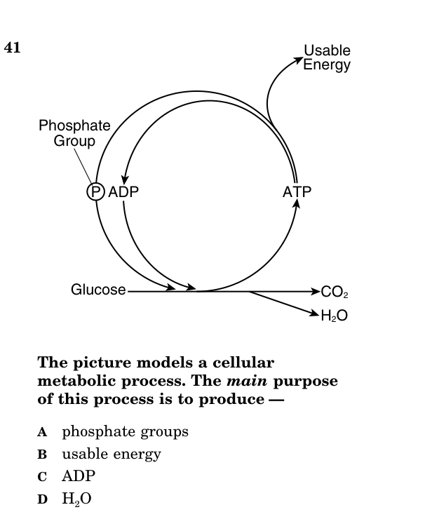

- Water's polarity and hydrogen bonding
- Cohesion, adhesion, surface tension
- Water as a universal solvent
- High specific heat and thermal regulation
- Ice floats — why this matters for life
- Four categories: carbohydrates, lipids, proteins, nucleic acids
- Monomers vs. polymers for each type
- Structure and function of each macromolecule
- Role of carbon, hydrogen, and oxygen
- Enzymes as protein catalysts
- Active site and substrate specificity
- Lock-and-key model
- Effects of temperature and pH; denaturation
- Transcription: DNA → mRNA in nucleus
- Translation: mRNA → protein at ribosome
- Codons, anticodons, amino acids
- Using a codon chart on the SOL
- Photosynthesis equation and location (chloroplasts)
- Cellular respiration equation and location (mitochondria)
- ATP as the energy currency of the cell
- Relationship between the two processes (products of one = reactants of the other)
- How oxygen affects energy availability
- Students are NOT expected to know the complex multistep processes
| Term | One-Line Definition |
|---|---|
| Polarity | Unequal sharing of electrons gives water a positive and negative end |
| Hydrogen Bond | Weak attraction between the + end of one water molecule and the − end of another |
| Cohesion | Water molecules sticking to OTHER water molecules |
| Adhesion | Water molecules sticking to OTHER substances (e.g., glass, plant xylem) |
| Surface Tension | The "skin" on water's surface caused by cohesion of surface molecules |
| Specific Heat | Amount of energy needed to raise 1 g of a substance by 1°C; water's is very HIGH |
| Solvent | A substance that dissolves other substances; water is the "universal solvent" |
| Monomer | Single small building-block molecule (e.g., amino acid, monosaccharide, nucleotide) |
| Polymer | Large molecule made of repeating monomers linked together |
| Carbohydrate | Macromolecule made of sugars; quick energy source (glucose, starch, cellulose) |
| Lipid | Fats, oils, waxes; long-term energy storage, insulation, and cell membrane structure |
| Protein | Made of amino acids; enzymes, muscle, antibodies — most diverse macromolecule |
| Nucleic Acid | DNA and RNA; made of nucleotides; stores and transmits genetic information |
| Amino Acid | Monomer of proteins; 20 different types linked by peptide bonds |
| Enzyme | Protein catalyst that speeds up chemical reactions without being consumed |
| Active Site | Region on the enzyme where the substrate binds (lock-and-key fit) |
| Substrate | The specific molecule an enzyme acts upon |
| Denaturation | Loss of enzyme shape (and function) due to extreme temperature or pH |
| Catalyst | A substance that speeds up a chemical reaction without being used up |
| Transcription | DNA is copied into mRNA in the nucleus |
| Translation | mRNA is read by a ribosome to build a chain of amino acids (protein) |
| Codon | Three-nucleotide sequence on mRNA that codes for one amino acid |
| ATP | Adenosine triphosphate — the cell's main energy-carrying molecule |
| Photosynthesis | Process that converts light energy + CO₂ + H₂O into glucose + O₂ in chloroplasts |
| Cellular Respiration | Process that breaks down glucose + O₂ into CO₂ + H₂O + ATP in mitochondria |
| Chlorophyll | Green pigment in chloroplasts that captures light energy for photosynthesis |
- A1–2 questions
- BAbout 6 questions
- CAbout 15 questions
- D25 questions
- ADrawing the structure of a water molecule
- BMemorizing every amino acid name
- CConfusing the 4 macromolecules and their functions
- DCalculating the molecular weight of glucose
Answer these honestly — right or wrong, they help Mr. England see where you're starting from.
- Ahas a high specific heat
- Bis a good evaporative coolant
- Cis cohesive and adhesive
- Dhas a high boiling point
- ACarbohydrates
- BLipids
- CProteins
- DNucleic acids
- Amechanical energy
- Bnuclear energy
- Cchemical energy
- Delectrical energy
A water molecule (H₂O) is made of two hydrogen atoms bonded to one oxygen atom. But the electrons are NOT shared equally between them. Oxygen is much more electronegative than hydrogen, meaning it pulls the shared electrons closer to itself. This creates an uneven charge distribution: the oxygen end has a slight negative charge (δ−) and each hydrogen end has a slight positive charge (δ+). A molecule with an uneven charge like this is called a polar molecule.
Think of it like a magnet — water has a "positive side" and a "negative side." This polarity is the single most important concept in water chemistry because it explains EVERY other property of water that the SOL tests.
Because water molecules are polar, the slightly positive hydrogen of one molecule is attracted to the slightly negative oxygen of a neighboring molecule. This attraction is called a hydrogen bond. One hydrogen bond by itself is very weak — about 20 times weaker than the bonds holding H and O together inside a single water molecule. But there are billions of water molecules in even a single drop of water, and all of them are forming hydrogen bonds with their neighbors simultaneously.
This massive network of hydrogen bonds gives water its extraordinary properties. On the SOL, if a question asks "why does water do X?" the answer almost always traces back to polarity and hydrogen bonding.
1. Cohesion & Surface Tension. Cohesion means water molecules are attracted to OTHER water molecules. They "stick together." At the surface of a body of water, molecules are pulled inward and sideways by their neighbors but there are no water molecules above them pulling upward. This creates a tight "skin" on the surface called surface tension. Surface tension is strong enough to support lightweight objects — this is why insects like water striders can walk on the surface of a pond without sinking.
2. Adhesion. Adhesion means water molecules are attracted to OTHER substances — glass, soil particles, the walls of plant xylem tubes. Adhesion and cohesion work together in plants: adhesion pulls water molecules against the walls of the xylem, and cohesion pulls neighboring water molecules up behind them. This is how water travels from roots to leaves against gravity, a process called capillary action.
3. Universal Solvent. Because water is polar, it can surround and dissolve other polar molecules and ionic compounds. The positive end of water is attracted to negative ions, and the negative end is attracted to positive ions, effectively pulling the solute apart and carrying it in solution. This is why water dissolves more substances than any other liquid on Earth. In biology, this property is critical: blood plasma (which is mostly water) carries dissolved nutrients, hormones, gases (O₂ and CO₂), and waste products throughout the body. Without water's solvent ability, metabolism would be impossible.
4. High Specific Heat. Specific heat is the amount of energy required to raise the temperature of 1 gram of a substance by 1°C. Water has an unusually HIGH specific heat because hydrogen bonds absorb a lot of heat energy before they break. This means water resists temperature change. Biologically, this is enormous: oceans and large lakes moderate coastal climates (they absorb heat during the day and release it at night), and your body — which is about 60-70% water — maintains a stable internal temperature even when the outside temperature fluctuates wildly.
5. Evaporative Cooling. When water evaporates from a surface, the molecules that escape are the ones with the most kinetic energy (the "hottest" ones). This leaves behind the cooler molecules, effectively lowering the surface temperature. This is why sweating cools your body — as sweat evaporates, it takes heat with it. In plants, transpiration (the evaporation of water from leaves) cools the plant and also helps pull water upward through the xylem.
6. Ice Floats. Most substances are DENSER as solids than as liquids. Water is the opposite: when water freezes, the hydrogen bonds lock molecules into a crystalline structure that spaces them farther apart, making ice LESS dense than liquid water. This is why ice floats. Biologically, this is essential for aquatic life: ice forms on TOP of lakes and ponds, creating an insulating layer that prevents the entire body of water from freezing solid. Fish and other organisms survive winter in the liquid water beneath the ice.
The VDOE framework specifically states that water's chemical and physical properties "facilitate metabolic activities in living cells." Here is how each property connects to life:
| Property | Caused By | Biological Role |
|---|---|---|
| Cohesion | Hydrogen bonds between water molecules | Water transport in plants (xylem); surface tension supports small organisms |
| Adhesion | Polarity attracts water to other surfaces | Capillary action in plants; water clings to soil particles for root absorption |
| Universal Solvent | Polarity dissolves ionic & polar substances | Blood transports nutrients/wastes; chemical reactions occur in solution |
| High Specific Heat | Hydrogen bonds absorb energy before breaking | Stable body temperature; ocean temperature regulation |
| Evaporative Cooling | Fastest molecules escape, cooling the surface | Sweating cools the body; transpiration cools plant leaves |
| Ice Floats | Hydrogen bonds space molecules apart in ice | Insulates aquatic ecosystems; aquatic life survives winter |
Water doesn't just exist passively in cells — it moves. Osmosis is the movement of water molecules across a semipermeable membrane from an area of higher water concentration to an area of lower water concentration. On the SOL, osmosis questions often describe cells placed in different solutions:
| Solution Type | What Happens | Cell Result |
|---|---|---|
| Hypotonic (less solute outside) | Water moves INTO the cell | Cell swells (animal cell may burst; plant cell becomes turgid/rigid) |
| Hypertonic (more solute outside) | Water moves OUT of the cell | Cell shrinks / wilts (plasmolysis in plants) |
| Isotonic (equal solute) | Water moves equally in both directions | No net change in cell size |
A key principle: water always moves toward the side with MORE solute (dissolved stuff). If you put apple slices in very salty water, the water inside the apple cells moves OUT toward the salty solution, and the apple becomes shriveled and soft.
(2006-33) Some insects can stand on the surface of water because water —
- AIt dissolves many substances.
- BIts solid form is more dense than its liquid.
- CIt is slightly more acidic than air.
- DIt has a low heat absorption capacity.
- Asuffocation of aquatic organisms
- Bmixing a lake's thermal layers
- Cpreventing a lake from freezing solid
- Daltering migration patterns of fish
- Alose water in both solutions
- Bgain water in the distilled water and lose water in the salty water
- Cgain water in both solutions
- Dlose water in the distilled water and gain water in the salty water
- Aremoves dirt from the surface of the skin
- Bcools the skin with evaporation
- Crelaxes the muscles
- Dremoves extra water from the cells
All four macromolecules are carbon-based (also called "organic" molecules). Carbon is uniquely suited to be the backbone of biological molecules because it has 4 bonding sites — it can form up to 4 covalent bonds with other atoms, creating long chains, branched structures, and rings. The VDOE framework specifically states: "Carbon, hydrogen, and oxygen from sugar molecules may combine with other elements to form amino acids and/or other large carbon-based molecules." In other words, a relatively small set of elements (C, H, O, N, S, P) combine in different arrangements to build every macromolecule your body needs.
Macromolecules are built from small repeating units called monomers (mono = one). When monomers are linked together, they form large molecules called polymers (poly = many). Think of it like building with LEGO bricks: each individual brick is a monomer, and the finished structure is a polymer. The specific type of monomer determines which macromolecule gets built:
| Macromolecule | Monomer | Elements |
|---|---|---|
| Carbohydrate | Monosaccharide (simple sugar) | C, H, O |
| Lipid | Fatty acids + glycerol | C, H, O (very little O) |
| Protein | Amino acid | C, H, O, N (sometimes S) |
| Nucleic Acid | Nucleotide | C, H, O, N, P |
Carbohydrates are made of carbon, hydrogen, and oxygen, usually in a 1:2:1 ratio (for every carbon, there are two hydrogens and one oxygen). Their primary roles are quick energy and structural support.
Monosaccharides (single sugars) like glucose, fructose, and galactose are the simplest carbohydrates and provide immediate energy to cells. Glucose (C₆H₁₂O₆) is the most important — it's the sugar that gets broken down in cellular respiration to make ATP.
Disaccharides (two sugars linked together) include sucrose (table sugar = glucose + fructose), lactose (milk sugar = glucose + galactose), and maltose (glucose + glucose).
Polysaccharides (many sugars linked together) include starch (energy storage in PLANTS), glycogen (energy storage in ANIMALS — stored in liver and muscles), and cellulose (structural component of plant cell walls). All three are polymers of glucose, but the way the glucose units are linked determines whether the molecule stores energy or provides structure.
Lipids include fats, oils, waxes, phospholipids, and steroids. Unlike the other three macromolecules, lipids are NOT true polymers — they don't form long repeating chains from a single monomer. Instead, most lipids are built from fatty acids attached to a glycerol backbone.
Lipids have a very high ratio of carbon and hydrogen to oxygen, which means they store more energy per gram than carbohydrates. This makes them ideal for long-term energy storage. Other functions include:
- Insulation — fat beneath the skin helps animals conserve body heat (this is a classic SOL question)
- Cell membranes — phospholipids form the bilayer that makes up every cell membrane
- Waterproofing — waxes on plant leaves and animal fur prevent water loss
- Hormones — steroids like estrogen and testosterone are lipids that act as chemical messengers
Proteins are polymers of amino acids, linked together by peptide bonds. There are 20 different amino acids, and the specific sequence in which they're linked determines the protein's shape and function. Proteins are the most functionally diverse macromolecule — they do almost everything in the cell:
| Protein Function | Example |
|---|---|
| Enzymes (catalysts) | Amylase breaks down starch; pepsin digests protein in the stomach |
| Structural | Collagen in skin, keratin in hair and nails, actin/myosin in muscles |
| Transport | Hemoglobin carries oxygen in red blood cells |
| Immune defense | Antibodies recognize and attack foreign invaders |
| Hormones | Insulin regulates blood sugar (note: some hormones are proteins, some are lipids) |
| Cell signaling | Receptor proteins on cell membrane detect chemical signals |
The VDOE framework emphasizes that "proteins carry out the essential functions of life processes through systems of specialized cells." On the SOL, if a question describes something being done by a cell — building structures, speeding up reactions, defending against pathogens, transporting molecules — the answer is almost always a protein.
Proteins are assembled in the ribosome. The process by which DNA's instructions are used to build proteins is called protein synthesis (covered in BIO.2d).
Nucleic acids store and transmit genetic information. There are two types: DNA (deoxyribonucleic acid) and RNA (ribonucleic acid). Both are polymers of nucleotides. Each nucleotide has three parts: a sugar (deoxyribose in DNA, ribose in RNA), a phosphate group, and a nitrogenous base.
DNA uses the bases Adenine (A), Thymine (T), Guanine (G), and Cytosine (C). RNA uses the same bases except it has Uracil (U) instead of Thymine. DNA is double-stranded (the famous double helix), while RNA is single-stranded. DNA stores the genetic code; RNA carries that code from the nucleus to the ribosome where proteins are built.
This table is the single most important thing to memorize for BIO.2b. If you can fill this in from memory, you can answer any macromolecule question on the SOL.
| Macromolecule | Monomer | Primary Functions | Examples |
|---|---|---|---|
| Carbohydrate | Monosaccharide (simple sugar) | Quick energy; structural support | Glucose, starch, glycogen, cellulose |
| Lipid | Fatty acids + glycerol | Long-term energy; insulation; cell membranes | Fats, oils, waxes, phospholipids, steroids |
| Protein | Amino acid | Enzymes, structure, transport, immune defense | Hemoglobin, antibodies, amylase, collagen |
| Nucleic Acid | Nucleotide | Store and transmit genetic information | DNA, RNA |
(2005-38) Amino acids link together by peptide bonds to form proteins. In which cellular organelle would this process occur?
- Anucleic acids
- Bfatty acids
- Cnucleotides
- Damino acids
- Aprovide insulation
- Bstore energy
- Cform cell walls
- Dcontain nitrogen
- AMitochondrion
- BRibosome
- CLysosome
- DGolgi body
- ANucleotides
- BWater
- CLipids
- DAmino acids
An enzyme is a special type of protein that acts as a biological catalyst. A catalyst is any substance that speeds up a chemical reaction without being consumed or permanently changed by the reaction. After the reaction is complete, the enzyme is released unchanged and ready to catalyze the same reaction again.
Every chemical reaction requires a minimum amount of energy to get started, called the activation energy. Think of it like pushing a boulder over a hill — you need a big push to get it to the top, but then it rolls down the other side on its own. Enzymes work by lowering the activation energy, making it much easier for the reaction to proceed. They don't change what the reaction produces; they just make it happen faster.
Without enzymes, the chemical reactions in your body would happen so slowly that life would be impossible. The VDOE framework states: "Enzymes are a group of proteins that function to moderate the rate of metabolic reaction by acting as catalysts." The word "moderate" here means "control" — enzymes regulate how fast reactions happen.
Each enzyme has a specific region called its active site. The active site is a groove or pocket on the enzyme's surface with a very specific three-dimensional shape. The molecule that the enzyme acts upon is called the substrate. The substrate fits into the active site like a key fits into a lock — only the correct substrate will fit. This is called the lock-and-key model of enzyme action.
Here's the process step by step:
| Step | What Happens |
|---|---|
| 1. Substrate approaches | The substrate molecule encounters the enzyme and binds to the active site |
| 2. Enzyme-substrate complex | The substrate is held in place, and the enzyme facilitates the chemical reaction |
| 3. Products released | The reaction produces product(s), which are released from the active site |
| 4. Enzyme recycled | The enzyme is unchanged and available to bind another substrate molecule |
The key concept for the SOL: each enzyme is specific to ONE substrate. Amylase breaks down starch but cannot act on proteins. Pepsin digests proteins but cannot act on starch. This specificity exists because each enzyme's active site has a unique shape that only matches its specific substrate.
Enzymes work best under specific conditions. Two factors are especially important on the SOL:
Temperature. Every enzyme has an optimal temperature at which it works fastest. For human enzymes, this is typically around 37°C (body temperature). Below the optimum, molecules move more slowly and reactions are sluggish. Above the optimum, the enzyme begins to lose its shape. At very high temperatures, the enzyme denatures — the heat breaks the bonds that hold the enzyme in its three-dimensional shape, the active site distorts, and the substrate can no longer fit. Denaturation is usually permanent; the enzyme cannot recover its function.
pH. Every enzyme also has an optimal pH. For most human enzymes, this is around pH 7 (neutral). However, some enzymes are adapted to extreme pH environments: pepsin in the stomach works best at pH 2 (very acidic), while trypsin in the small intestine works best around pH 8 (slightly basic). If the pH moves too far from the optimum in either direction, the enzyme denatures.
Denaturation occurs when an enzyme's three-dimensional shape is disrupted by extreme temperature or pH. The active site changes shape, and the substrate can no longer bind. Once denatured, most enzymes cannot return to their original shape. Think of it like cooking an egg — once the protein is cooked (denatured), you can't "uncook" it back to a raw egg.
On a graph of enzyme activity vs. temperature (or pH), you'll see a bell curve: activity increases as conditions approach the optimum, peaks at the optimum, then drops sharply as the enzyme denatures. The SOL often shows such a graph and asks you to identify the optimum or explain why activity decreases.
(2004-16) Enzymes only work with specific substrates because each substrate —
The VDOE framework requires students to "plan and conduct an investigation to determine the effect of an enzyme on a biochemical reaction." Here's how to design one:
| Component | Example Investigation |
|---|---|
| Question | How does temperature affect the rate of catalase breaking down hydrogen peroxide? |
| IV (changed) | Temperature (test at 10°C, 25°C, 37°C, 50°C, 70°C) |
| DV (measured) | Rate of O₂ gas production (bubbles per minute) |
| Constants | Same enzyme concentration, same H₂O₂ concentration, same volume, same time |
| Control | Same setup WITHOUT enzyme (to show the reaction doesn't happen on its own) |
| Expected result | Activity increases up to ~37°C (optimal), then drops as enzyme denatures |
On a graph of your results, you would see a bell curve: enzyme activity rises as temperature approaches the optimum, peaks at the optimum (~37°C for human enzymes), then drops sharply as high temperatures denature the enzyme. The same type of investigation can be done with pH instead of temperature.
- AEnzymes act as products to create new chemical reactions.
- BEnzymes act as substrates when the necessary proteins are unavailable.
- CEnzymes bond with substrates to create the new reaction products.
- DEnzymes act as catalysts to drive chemical reactions forward.
- Aslow down
- Bspeed up
- Ctake in heat
- Dgive off heat
- AQuaternary structure
- BActive site
- CBinding pocket
- DPleated sheet
- Apolysaccharides
- Blipids
- Cenzymes
- Dcarbohydrates
- Amore enzymes are present at a higher pH
- Bpepsin is less sensitive to pH than trypsin
- Cpepsin is less effective at low pH than trypsin
- DpH affects the activity rate of enzymes
The Central Dogma of molecular biology describes the flow of genetic information in cells: DNA → RNA → Protein. DNA holds the master blueprint for every protein your body needs to make. But DNA never leaves the nucleus. Instead, the cell makes a temporary copy of the needed gene in the form of messenger RNA (mRNA), which carries the instructions out of the nucleus to the ribosome, where the protein is actually assembled.
This two-step process — first copying DNA into mRNA, then reading mRNA to build a protein — is called protein synthesis. The VDOE framework states: "Protein synthesis is a biochemical process that uses information coded in DNA to construct proteins."
Transcription happens inside the nucleus. The enzyme RNA polymerase binds to the DNA at the start of a gene, unzips the double helix, and reads one strand of the DNA (called the template strand). As it reads each DNA base, it builds a complementary strand of mRNA using the base-pairing rules:
| DNA Base | mRNA Base |
|---|---|
| Adenine (A) | Uracil (U) |
| Thymine (T) | Adenine (A) |
| Guanine (G) | Cytosine (C) |
| Cytosine (C) | Guanine (G) |
Notice: in RNA, Uracil (U) replaces Thymine (T). Wherever DNA has an A, the mRNA gets a U. This is the most commonly tested detail about transcription.
Once the mRNA strand is complete, it detaches from the DNA, exits the nucleus through a nuclear pore, and travels to a ribosome in the cytoplasm.
Translation happens at a ribosome in the cytoplasm (ribosomes can be free-floating or attached to the rough endoplasmic reticulum). The ribosome reads the mRNA three bases at a time. Each group of three mRNA bases is called a codon. Each codon specifies one particular amino acid.
Transfer RNA (tRNA) molecules carry amino acids to the ribosome. Each tRNA has a three-base sequence called an anticodon that is complementary to a specific mRNA codon. When a tRNA's anticodon matches the mRNA codon currently in the ribosome, the tRNA delivers its amino acid, which is added to the growing protein chain by a peptide bond.
The ribosome moves along the mRNA one codon at a time, reading codons and adding amino acids, until it reaches a stop codon (UAA, UAG, or UGA). At that point, the completed protein is released.
| Feature | Transcription | Translation |
|---|---|---|
| Location | Nucleus | Ribosome (cytoplasm) |
| Input | DNA template strand | mRNA |
| Output | mRNA | Protein (amino acid chain) |
| Key Enzyme/Structure | RNA polymerase | Ribosome, tRNA |
| Base Rule | A→U, T→A, G→C, C→G | Codon-anticodon matching |
The SOL will provide you with an mRNA codon chart and ask you to determine which amino acid(s) a DNA or mRNA sequence codes for. Here's how to use it:
A DNA template strand reads: TAC-AAG-GCA. What amino acid sequence would be produced?
DNA: T-A-C → mRNA: A-U-G
DNA: A-A-G → mRNA: U-U-C
DNA: G-C-A → mRNA: C-G-U
AUG = Methionine (Met) — this is also the START codon!
UUC = Phenylalanine (Phe)
CGU = Arginine (Arg)
The VDOE framework states: "Proteins carry out the essential functions of life processes through systems of specialized cells." Every protein in your body — every enzyme, every antibody, every structural protein — was built through protein synthesis. If a mutation changes even one base in the DNA, it could change the codon, which could change the amino acid, which could change the protein's shape and function. This is the molecular basis of genetic variation and connects BIO.2d directly to BIO.5 (Genetics).
- ATAC
- BATG
- CAUG
- DUAC
- ANucleus
- BRibosome
- CCytoplasm
- DCell membrane
- AIt copies the DNA sequence into mRNA
- BIt carries specific amino acids to the ribosome
- CIt holds the two strands of DNA together
- DIt breaks down proteins into amino acids
- AProtein → RNA → DNA
- BRNA → DNA → Protein
- CDNA → Protein → RNA
- DDNA → RNA → Protein
Every living organism needs energy to survive. The VDOE framework states: "Sustaining life processes requires substantial energy and matter inputs." But where does that energy come from? The answer depends on whether the organism makes its own food or gets it from other organisms:
| Type | Definition | Energy Source | Examples |
|---|---|---|---|
| Autotroph | Makes its own food | Sunlight (photoautotroph) or chemicals (chemoautotroph) | Plants, algae, some bacteria |
| Heterotroph | Must consume other organisms for food | Eating autotrophs or other heterotrophs | Animals, fungi, most bacteria |
Autotrophs capture energy from sunlight through photosynthesis and store it in the chemical bonds of glucose. Both autotrophs AND heterotrophs then break down that glucose through cellular respiration to release the energy and store it in ATP, which the cell uses for all its life processes.
Photosynthesis is the process by which plant cells (and some microorganisms) use solar energy to combine carbon dioxide and water into glucose and oxygen. It occurs in the chloroplasts, specifically using the green pigment chlorophyll to capture light energy.
6CO₂ + 6H₂O + light energy → C₆H₁₂O₆ + 6O₂
In words: carbon dioxide + water + light energy → glucose + oxygen.
Key points to remember:
- Location: Chloroplasts (only in plant cells and some microorganisms)
- Energy input: Light energy from the sun (radiant energy)
- Energy output: Chemical energy stored in the bonds of glucose
- Chlorophyll is the pigment that captures sunlight. Without chlorophyll, an organism cannot photosynthesize. This is why fungi (which have no chlorophyll) cannot make their own food.
- The oxygen released is a BYPRODUCT — it's released into the atmosphere and used by organisms for cellular respiration
- The glucose produced can be: (1) used immediately for energy, (2) stored as starch for later use, or (3) rearranged into other molecules for growth and repair
Cellular respiration is the process by which cells break down glucose in the presence of oxygen to release energy, which is captured in the bonds of ATP. It occurs primarily in the mitochondria.
C₆H₁₂O₆ + 6O₂ → 6CO₂ + 6H₂O + ATP (energy)
In words: glucose + oxygen → carbon dioxide + water + ATP.
Key points:
- Location: Mitochondria (in BOTH plant and animal cells)
- Energy input: Chemical energy in glucose bonds
- Energy output: ATP (usable energy for the cell)
- Both plants AND animals perform cellular respiration. Plants photosynthesize AND respire. Animals only respire.
- Most of the energy released from breaking glucose bonds is lost as thermal energy (heat). Only a portion is captured in ATP.
- CO₂ and H₂O are waste products released by the cell
ATP (adenosine triphosphate) is the molecule cells use to power their activities. Think of ATP as cellular "cash" — glucose is like a $100 bill (lots of stored energy), but the cell needs to "make change" into ATP (small, usable energy units) before it can spend that energy on life processes like muscle contraction, active transport, or building proteins.
When a cell needs energy, it breaks the bond between the second and third phosphate groups of ATP, releasing energy. This converts ATP into ADP (adenosine diphosphate) + a free phosphate group. The cell then uses the energy from cellular respiration to reattach the phosphate group, regenerating ATP. This cycle runs constantly in every living cell.
Photosynthesis and cellular respiration are opposite and complementary processes. The products (outputs) of photosynthesis are the reactants (inputs) of cellular respiration, and vice versa:
| Feature | Photosynthesis | Cellular Respiration |
|---|---|---|
| Equation | CO₂ + H₂O + light → glucose + O₂ | glucose + O₂ → CO₂ + H₂O + ATP |
| Location | Chloroplasts | Mitochondria |
| Energy | Captures light energy → stores as chemical energy | Releases chemical energy → stores as ATP |
| Reactants | CO₂ + H₂O | Glucose + O₂ |
| Products | Glucose + O₂ | CO₂ + H₂O + ATP |
| Who does it? | Plants, algae, some bacteria | ALL living organisms |
This is why they form a cycle: photosynthesis produces the glucose and oxygen that cellular respiration consumes, and cellular respiration produces the CO₂ and H₂O that photosynthesis consumes. This cycling of matter and energy is fundamental to life on Earth.
The VDOE framework specifically asks students to "describe how the presence of oxygen affects the amount of energy available to an organism." With oxygen (aerobic respiration), cells can extract a LOT of ATP from each glucose molecule — roughly 36-38 ATP per glucose. Without oxygen (anaerobic conditions), cells can only perform fermentation, which produces only about 2 ATP per glucose. That's a massive difference.
This is why you breathe harder during exercise: your muscles need more oxygen to produce enough ATP to keep working. If oxygen supply can't keep up, your muscles switch to fermentation, which produces lactic acid and causes that burning feeling.
(2001-33) The processes of photosynthesis and respiration can be thought of as a cycle because —
- ACO₂
- BRNA
- CATP
- DDNA
- AExcretion of metabolic waste
- BCirculation of body fluids
- CAsexual reproduction
- DCellular respiration
- Aspores
- Broots
- Cchlorophyll
- Dhyphae
- ALarge root size
- BLarge leaf size
- CSmall seed size
- DSmall stem
- Athe breathing rate to supply more oxygen to cells for the release of energy
- Bactivity in the nervous system to stimulate intake of carbon dioxide
- Cthe need for waste products to be retained
- Dfood intake to increase substances available for respiration
You must flip ALL 26 flashcards before the quiz appears. Then score at least 8/10 on the quiz to unlock the Practice Test.
Print this page for a quick reference before the SOL.
| Property | Cause | Biological Role |
|---|---|---|
| Cohesion / Surface Tension | H-bonds between water molecules | Insects walk on water; water transport in plants |
| Adhesion | Polarity attracts to other surfaces | Capillary action in xylem |
| Universal Solvent | Polar molecule dissolves ionic/polar solutes | Blood transports nutrients & waste |
| High Specific Heat | H-bonds absorb energy before breaking | Stable body/ocean temperature |
| Evaporative Cooling | Fastest molecules escape surface | Sweating; transpiration |
| Ice Floats | H-bonds space molecules in crystal | Insulates lakes; aquatic life survives winter |
| Type | Monomer | Functions | Examples |
|---|---|---|---|
| Carbohydrate | Monosaccharide | Quick energy; structure | Glucose, starch, glycogen, cellulose |
| Lipid | Fatty acid + glycerol | Long-term energy; insulation; membranes | Fats, oils, phospholipids, steroids |
| Protein | Amino acid | Enzymes; structure; transport; defense | Hemoglobin, antibodies, amylase |
| Nucleic Acid | Nucleotide | Genetic info storage & transmission | DNA, RNA |
| Concept | Key Fact |
|---|---|
| What they are | Proteins that act as biological catalysts |
| How they work | Lower activation energy; substrate binds to active site (lock-and-key) |
| Specificity | Each enzyme works on ONE specific substrate |
| NOT consumed | Enzyme is released unchanged after reaction; reused |
| Temperature | Optimal ~37°C for humans; too high → denaturation |
| pH | Each enzyme has optimal pH; pepsin ~2, trypsin ~8 |
| Denaturation | Shape lost → active site distorted → substrate can't bind |
| Step | Where | What Happens |
|---|---|---|
| Transcription | Nucleus | DNA → mRNA copy (A→U, T→A, G→C, C→G) |
| Translation | Ribosome | mRNA read 3 bases at a time (codons) → tRNA delivers amino acids → protein built |
AUG = start codon (methionine). UAA, UAG, UGA = stop codons. Always convert DNA → mRNA FIRST, then use codon chart.
| Photosynthesis | Cellular Respiration | |
|---|---|---|
| Equation | CO₂ + H₂O + light → glucose + O₂ | Glucose + O₂ → CO₂ + H₂O + ATP |
| Location | Chloroplasts | Mitochondria |
| Energy | Light → chemical (glucose) | Chemical (glucose) → ATP |
| Who | Plants, algae, some bacteria | ALL living organisms |
| Key molecule | Chlorophyll (captures light) | ATP (energy currency) |
They form a cycle: products of one are reactants of the other. With O₂ = ~36 ATP per glucose. Without O₂ (fermentation) = ~2 ATP.
BIO.2 Practice Test
Released Virginia SOL questions —
- AWater molecules would not be released from leaves
- BCarbohydrates would no longer be formed
- CFewer sugars would diffuse into the soil
- DMore CO₂ molecules would be taken in by leaves

- Areleases water vapor from plants
- Bincreases the rate of the water cycle
- Cspeeds the evaporation of water
- Dcauses photosynthesis in plants
- Agrow toward the sun
- Blose water and wilt
- Cgain water and become rigid
- Dincrease its rate of photosynthesis
- Ahomeostasis
- Bfermentation
- Cexcretion
- Dglycolysis
- ACarbohydrates
- BLipids
- CProteins
- DNucleic acids
- Anucleic acids
- Bfatty acids
- Cnucleotides
- Damino acids
- Aprovide insulation
- Bstore energy
- Cform cell walls
- Dcontain nitrogen
- AMitochondrion
- BRibosome
- CLysosome
- DGolgi body
- AEnzymes act as products to create new reactions
- BEnzymes act as substrates when proteins are unavailable
- CEnzymes bond with substrates to create new products
- DEnzymes act as catalysts to drive reactions forward
- Aactively interferes with other substrates
- Bdestroys its specific enzyme
- Ccan only use a specific ionic bond with the enzyme
- Dhas a specific activation site for enzyme attachment
- Apolysaccharides
- Blipids
- Cenzymes
- Dcarbohydrates
- ATAC
- BATG
- CAUG
- DUAC
- Amechanical energy
- Bnuclear energy
- Cchemical energy
- Delectrical energy
- Auses simple elements
- Bis responsible for most decay
- Cproduces oxygen
- Dreleases usable forms of nitrogen
- Aabsorb nutrients from soil
- Bcapture sunlight to produce sugars
- Cbreak down starches to glucose
- Ddecompose dead organisms
- Aone is used only by plants and the other only by animals
- Bboth give off oxygen to be used by animals
- Cthe products of one are used as the raw materials of the other
- Dthey both have the same purpose
- AProtein → RNA → DNA
- BDNA → RNA → Protein
- CRNA → DNA → Protein
- DDNA → Protein → RNA

- Ausable energy (ATP)
- BADP
- Cphosphate groups
- DH₂O
- Amotile
- Bprokaryotic
- Cunicellular
- Dheterotrophic
- Aheredity
- Bhomeostasis
- Cmutation
- Dcell division
⏳ Complete the Practice Test to see your results.